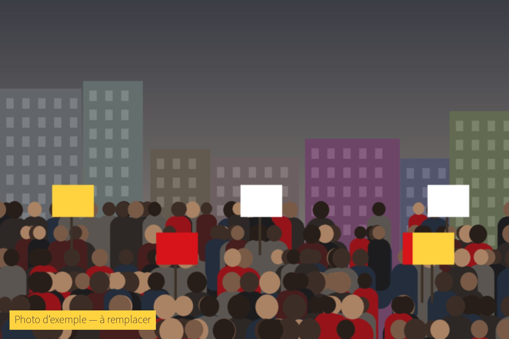

Budget Exemple
Budget de l'ESR : les établissements à l'os
Gel des recrutements, formations fermées, bâtiments vétustes : les collègues paient le prix du sous-financement.

Dans de nombreux établissements, les équipes constatent les mêmes effets : postes non remplacés, heures complémentaires en hausse, recours croissant aux contrats précaires.
Action Syndicale porte avec le SNESUP-FSU l'exigence d'un financement à la hauteur des missions de service public, avec un plan pluriannuel de créations d'emplois.
Dans votre établissement, faites remonter la situation à votre section : ces témoignages nourrissent l'action nationale.
Texte d'exemple : à remplacer par une vraie actualité.